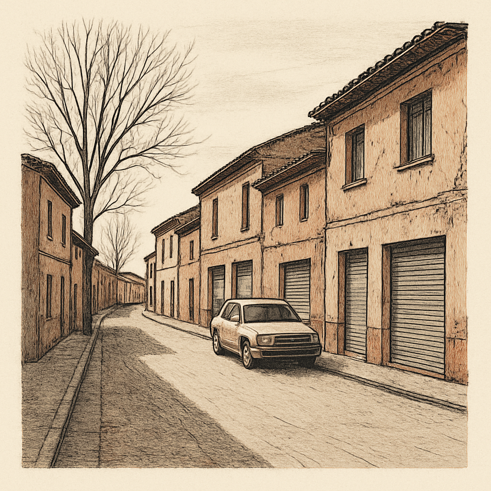

Villarramiel perdió ocho de cada diez vecinos en un siglo, y nadie firmó la orden
Los censos del INE de 1900 a 2025 dibujan un mapa que casi todos conocen de oído pero pocos han mirado junto: trece pueblos de Tierra de Campos que se han vaciado a ritmos muy distintos. Este reportaje reconstruye ese proceso con las cifras oficiales, sin adornos.

Una calle que se estrecha sin moverse
La escena es real solo en la medida en que las cifras la permiten reconstruir: una calle de Villarramiel un mediodía de invierno, con las persianas metálicas bajadas de lo que fueron comercios, la pintura de las fachadas descascarillada por décadas de heladas y sin nadie a la vista salvo un coche aparcado con el motor apagado. No hace falta imaginar mucho. En 1900 este pueblo palentino tenía 3.894 habitantes según el censo del INE de ese año; en 2025 el padrón municipal le cuenta 782. Es una caída del 79,9 % desde su máximo, la más brusca de los trece municipios que este reportaje examina.
Lo que impresiona no es solo el número final, sino que la calle en 1900 era la misma de ahora. Las casas siguen en pie, muchas cerradas. La geografía no se ha movido un metro; lo que se ha ido es la gente que la llenaba. Cuando uno pone los censos en fila, de década en década, ve que el vaciado no fue un derrumbe de un día, sino un goteo largo que casi nadie decidió y que nadie firmó.
La pregunta que esconden los censos
La pregunta que merece la pena hacerse no es si Tierra de Campos ha perdido población: eso lo sabe cualquiera. Es otra. ¿Por qué unos pueblos de la misma comarca, con el mismo clima y suelos parecidos, han perdido ocho de cada diez vecinos mientras otros apenas han bajado uno de cada diez? Entre Villarramiel, con su −79,9 %, y Medina de Rioseco, con un −9,1 % desde su máximo, hay un abismo. Ambos están en Tierra de Campos. Ambos aparecen en la misma serie del INE. Y sin embargo su siglo XX no se parece en casi nada. Entender esa diferencia importa más que lamentar el total.
Lo que dicen los números, año por año
Los datos vienen de dos fuentes del INE que conviene no mezclar. La población de 1900 a 1991 procede de los censos decenales ('Poblaciones de hecho'); la de 1996 a 2025, de las revisiones del Padrón Municipal. Entre 1991 y 1996 no hay dato: es el salto de una fuente a otra, y cualquier lectura debe respetar ese hueco. Con esa cautela, el retrato es nítido. Villarramiel cae de 3.894 en 1900 a 782 en 2025. Becerril de Campos pasa de 2.754 en 1900 a 737 en 2025, un −73,2 %. Fuentes de Nava, de 2.042 a 581, un −71,5 %. Villada, de 2.695 a 863, un −68 %.
No todos alcanzaron su techo en 1900. Carrión de los Condes tuvo su máximo en 1950 con 3.516 habitantes y hoy conserva 1.997, un −43,2 %. Paredes de Nava culminó también en 1950, con 4.836, y baja a 1.927. Valderas siguió creciendo hasta 1970, cuando llegó a 3.999, y ese pico tardío hace más brusca su caída posterior: 1.479 en 2025, un −63 %. Sahagún tocó su máximo de 3.606 en 1940 y aguanta hoy en 2.380, un −34 %, menos golpeado que la media comarcal.
El caso que rompe el patrón es Medina de Rioseco. Su serie oscila poco: 5.007 en 1900, un máximo de 5.077 en 2001 y 4.617 en 2025. En 125 años apenas ha perdido un 9,1 % desde su techo, y ese techo es reciente. Mayorga presenta otro perfil raro: cayó fuerte hasta 1991 (1.501 habitantes) y luego recuperó terreno, con 1.981 en 2004, antes de volver a bajar a 1.354 en 2025. Los censos, leídos así, no cuentan una sola historia de decadencia, sino varias velocidades distintas.
El mismo mapa, ritmos que no coinciden
Puestos uno al lado de otro, los trece municipios se separan en grupos claros. Están los que se desangraron pronto y sin freno, con su máximo ya en 1900: Villarramiel, Becerril, Fuentes de Nava, Villada, Villalón de Campos (−60 %) y Villalpando (−54,7 %). Su curva es la de un pueblo agrícola que se vació con la mecanización del campo y la emigración a las ciudades entre 1950 y 1981. Fuentes de Nava, por ejemplo, tenía 1.464 vecinos en 1960 y solo 1.040 en 1981: perdió casi un tercio en dos décadas, las de mayor éxodo.
Un segundo grupo alcanzó su cima entre 1940 y 1970 y cayó después con la misma lógica, aunque con más gente de partida: Carrión, Paredes de Nava, Valderas, Sahagún. Valderas es ilustrativo porque su pico llegó tardísimo, en 1970 con 3.999 habitantes, y entre ese censo y el de 1981 se desplomó a 2.679. Ese descenso de más de 1.300 personas en once años es el retrato del final del mundo rural tradicional en la comarca.
Y luego está Medina de Rioseco, cabecera comarcal, que sostiene su población porque concentra servicios, comercio e industria que los pueblos pequeños perdieron o nunca tuvieron. La distancia importa: un municipio de 4.617 habitantes ofrece instituto, centro de salud con más recursos y empleo administrativo que un pueblo de 600 no puede mantener. Sahagún, nudo del Camino de Santiago y con estación, muestra un patrón parecido de mayor resistencia, con su −34 %. Los datos sugieren, sin demostrarlo, que la diferencia no está en el campo que rodea a cada pueblo, sino en si ese pueblo funciona como centro para los demás o depende de otro. Becerril está a pocos kilómetros de Palencia capital y aun así perdió el 73,2 %: la cercanía a la ciudad no salvó, más bien facilitó marcharse a diario.
Lo que las cifras no explican
Conviene frenar aquí, porque los censos permiten describir pero no probar causas. Que Medina de Rioseco aguante y Villarramiel se vacíe puede deberse a su papel de cabecera, sí, pero el dossier no incluye datos de empleo, industria, servicios ni edad de la población que lo confirmen. Es una hipótesis razonable, no un hecho verificado. Los últimos años añaden ruido: entre 2020 y 2025 varios pueblos muestran pequeños repuntes o mesetas —Becerril sube de 727 en 2019 a 762 en 2021 antes de recaer a 737; Villalpando pasa de 1.399 en 2024 a 1.433 en 2025— que podrían ser rebote pospandemia, empadronamientos administrativos o simple oscilación estadística. Con estos datos no se puede saber cuál. Leer una recuperación en esos vaivenes sería forzar la cifra más allá de lo que dice.
La calle sigue ahí
Vuelvo a la calle de Villarramiel, la de las persianas bajadas y el coche con el motor apagado. En 1900 esa misma acera daba servicio a 3.894 personas; hoy a 782. La diferencia no cabe en una estadística abstracta: son casas concretas cerradas, portales sin timbre que suene. Y sin embargo el pueblo no ha desaparecido. Sigue teniendo padrón, ayuntamiento, un número que el INE actualiza cada año.
Los censos de estos trece municipios cuentan la misma década a velocidades distintas, y esa distancia entre el que resiste y el que se apaga es lo único que quizá aún se pueda mover. Queda una cuenta pendiente que los números no responden: qué hace que un pueblo de 782 habitantes decida seguir contándose, y hasta qué cifra.
- INE, Censos de población 'Poblaciones de hecho desde 1900 hasta 1991'
- INE, 'Cifras Oficiales de Población de los Municipios Españoles: Revisión del Padrón Municipal', serie 1996-2025